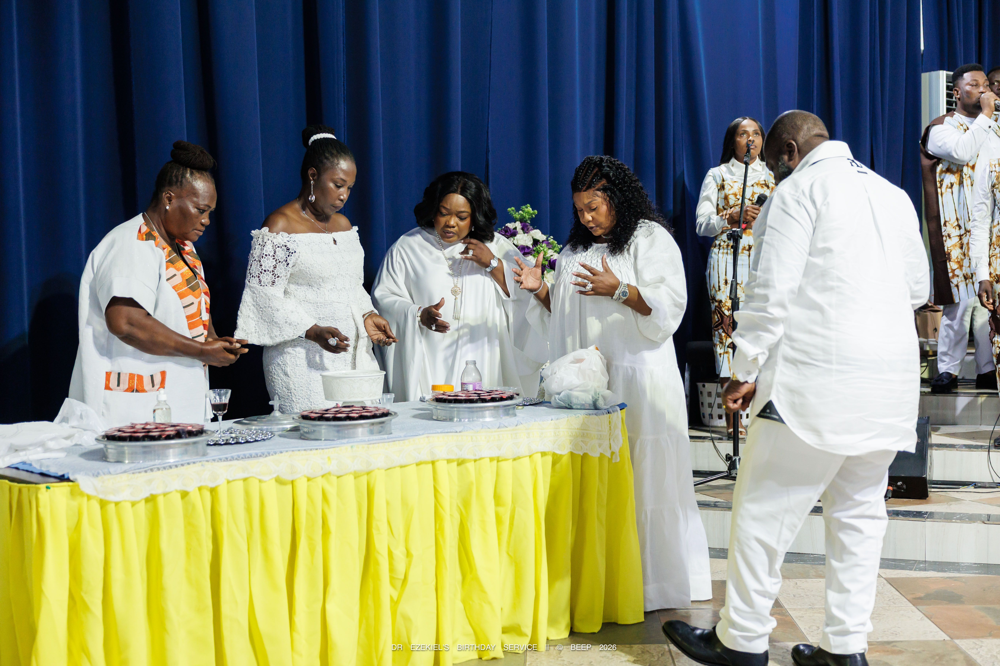

Featured Sermon
Grow in the Word
Watch, listen and stay connected to the teaching of Christian Service Church.
Watch Live Stream and SermonsHouse of Testimonies · East Legon, Accra
A Bible-believing, Spirit-led church welcoming people into worship, fellowship, and a growing life with God. Come and worship with us. Everybody is welcome.
Everything we do comes from the Bible and is led by the Holy Spirit.

Watch, listen and stay connected to the teaching of Christian Service Church.
Watch Live Stream and SermonsFind a rhythm of worship, prayer, teaching, and fellowship throughout the week.
| Day | Meeting | Time |
|---|---|---|
| Sunday | Sunday Worship | 9:00 AM – 12:00 noon |
| Monday | Prayer Meeting | 6:30 – 7:30 PM |
| Tuesday | Virtuous Women of Destiny | 9:00 AM – 12:00 noon |
| Tuesday | Youth Fellowship | 6:30 – 7:30 PM |
| Wednesday | Bible Studies | 6:30 – 7:30 PM |
| Thursday | Women Fellowship | 6:30 – 7:30 PM |
| Saturday | Shiloh Hour | 9:00 – 11:00 AM |
Church office: Monday to Friday, 9:00 AM – 5:00 PM.
Plan Your Visit“I am the way, and the truth, and the life. No one comes to the Father except through me.”John 14:6